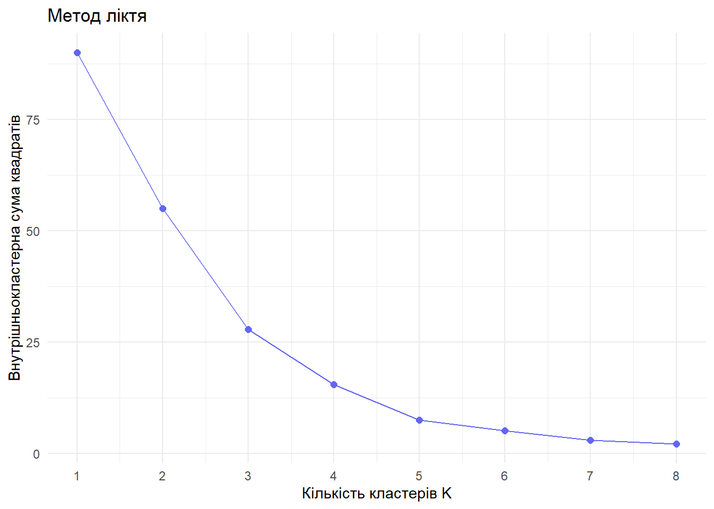
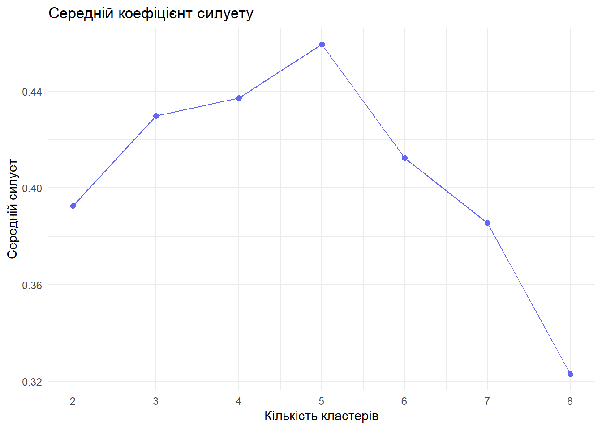
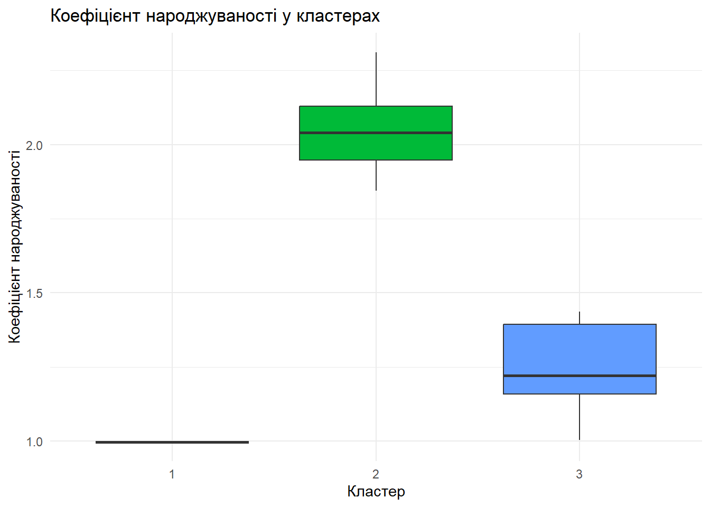
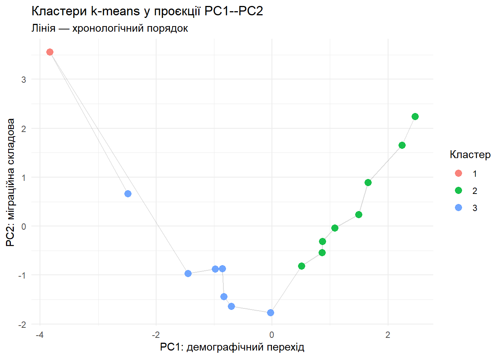
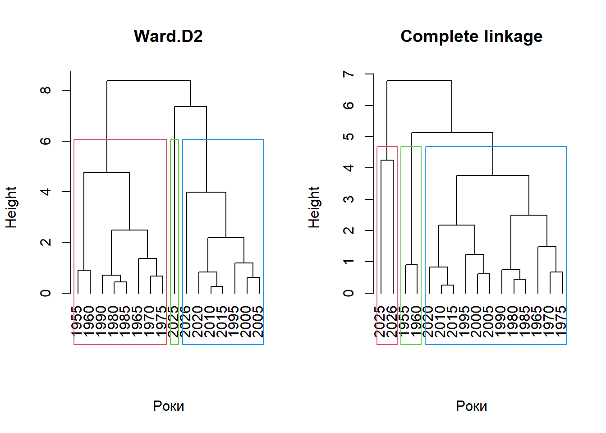
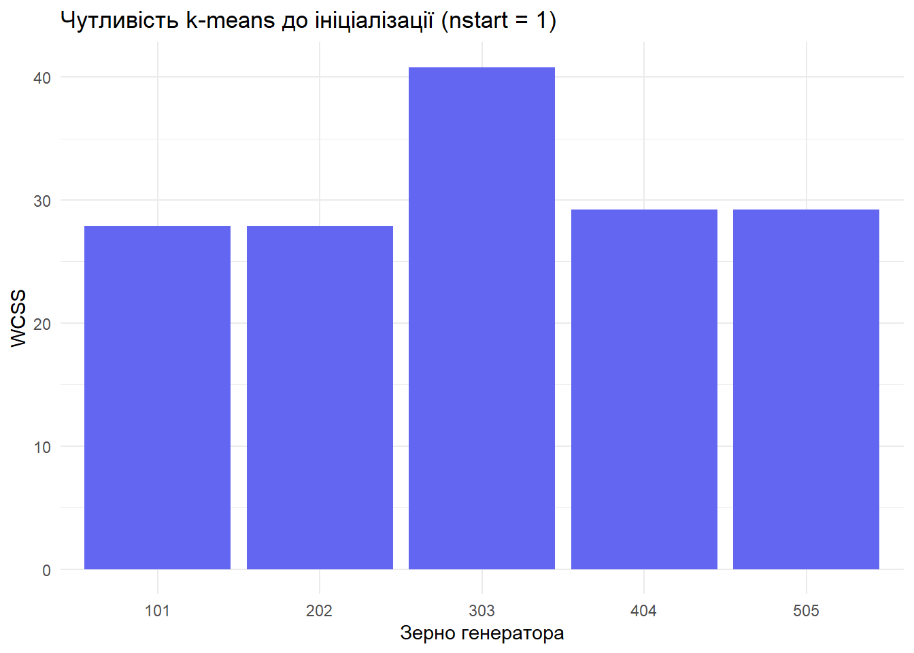
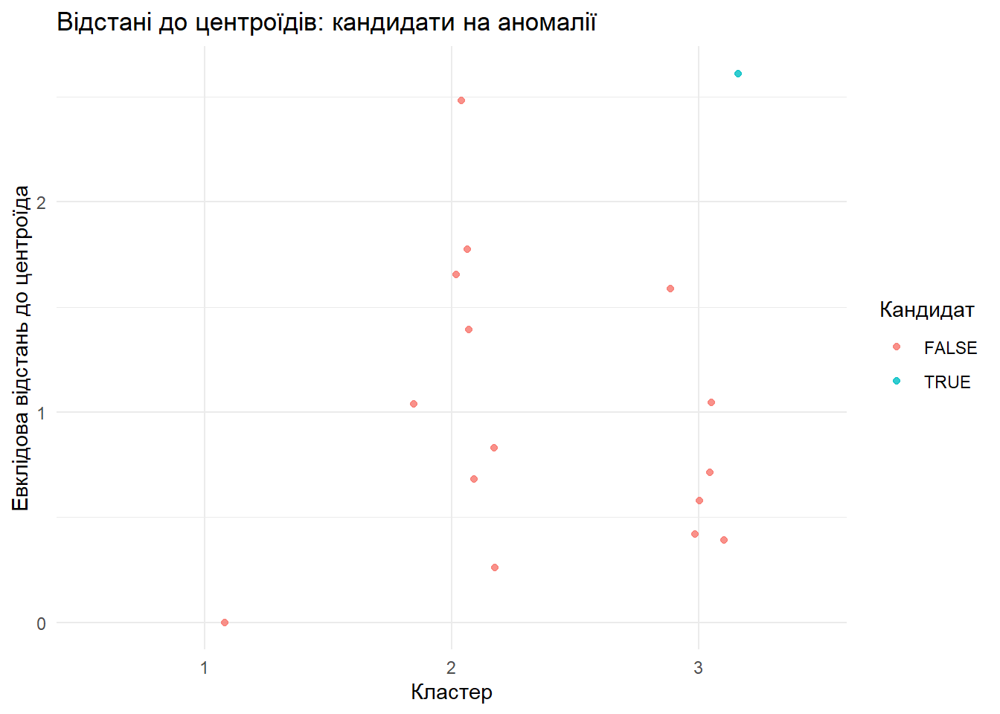

# install.packages(c("tidyverse", "cluster"))Лабораторна робота № 5. Кластерний аналіз, оцінювання кластерної структури та виявлення аномалій
Документ зроблено в Quarto
Мета: на основі даних наскрізного проєкту опанувати побудову та інтерпретацію кластерів методами k-середніх (k-means) та ієрархічної кластеризації (hierarchical clustering); оцінити структуру кластерів за внутрішніми показниками; визначити кандидатів на аномалії та критично оцінити їхню природу.
Індивідуальне завдання
Дані — демографічний набір щодо України за 1950–2026 рр. (Worldometer, файл data/raw/median_year.json). Використовуються результати ЛР4: data/processed/lab4_features.csv (шість кількісних ознак на рівні року) та data/processed/lab4_pca_scores.csv (координати PC1–PC2 для візуалізації).
Виконані пункти індивідуального завдання:
- обґрунтовано одиницю кластеризації, ознаки, метрику та масштабування;
- для \(K = 2,\dots,8\) побудовано графіки WCSS та середнього силуету, обрано \(K\) з поясненням;
- оцінено чутливість k-means до ініціалізації;
- виконано ієрархічну кластеризацію двома способами зв’язування (ward.D2 і complete) та порівняно розбиття;
- сформовано профілі кластерів у вихідних одиницях;
- побудовано проєкцію кластерів у просторі PC1–PC2 з ЛР4;
- виділено кандидатів на аномалії за відстанню до центроїда та досліджено їх;
- сформульовано висновок щодо якості, стійкості та обмежень розбиття.
Хід роботи
Крок 1. Підготовка середовища
library(tidyverse)
library(cluster)
dir.create("figures", showWarnings = FALSE)
dir.create("data/processed", recursive = TRUE, showWarnings = FALSE)
set.seed(12345)Крок 2. Завантаження даних із ЛР4
features_path <- "data/processed/lab4_features.csv"
scores_path <- "data/processed/lab4_pca_scores.csv"
if (!file.exists(features_path) || !file.exists(scores_path)) {
stop("Відсутні файли ЛР4. Спочатку виконайте ЛР4.")
}
analysis_data <- read_csv(features_path, show_col_types = FALSE)
scores <- read_csv(scores_path, show_col_types = FALSE)
glimpse(analysis_data)Rows: 16
Columns: 7
$ year <dbl> 1955, 1960, 1965, 1970, 1975, 1980, 1985, 1990, 1995, 2000…
$ pop_mln <dbl> 39.85971, 42.82409, 45.38689, 47.26131, 48.86523, 49.95515…
$ urban_share <dbl> 0.4153929, 0.4661540, 0.5050976, 0.5462814, 0.5826164, 0.6…
$ fertility <dbl> 2.312, 2.285, 1.943, 2.078, 2.049, 1.949, 2.033, 1.845, 1.…
$ median_age <dbl> 27.520, 28.342, 29.125, 31.262, 33.054, 32.510, 32.733, 33…
$ mig_rate <dbl> 3.27819738, 1.22083146, 1.52806233, -1.02271825, 0.3138427…
$ growth_rate <dbl> 0.013725217, 0.013725483, 0.009693544, 0.006067959, 0.0059…glimpse(scores)Rows: 16
Columns: 3
$ PC1 <dbl> 2.4701782, 2.2445800, 1.6524717, 1.4914980, 1.0787494, 0.8708259,…
$ PC2 <dbl> 2.24242232, 1.65675304, 0.89250891, 0.23801743, -0.03766657, -0.3…
$ year <dbl> 1955, 1960, 1965, 1970, 1975, 1980, 1985, 1990, 1995, 2000, 2005,…Одиниця кластеризації — один рік демографічної історії України. Ключ — year. У матрицю відстаней ідентифікатор не включається: year — це мітка спостереження, а не кількісна характеристика; її включення штучно нав’язало б кластеризацію хронологічний порядок, а не структуру демографічних показників. Ознаки — ті самі шість, що й у ЛР4:
feature_names <- c("pop_mln", "urban_share", "fertility",
"median_age", "mig_rate", "growth_rate")
stopifnot(
all(c("year", feature_names) %in% names(analysis_data)),
all(c("year", "PC1", "PC2") %in% names(scores)),
!anyDuplicated(analysis_data$year)
)
stopifnot(
nrow(analysis_data) > 8,
all(map_lgl(analysis_data[feature_names], ~sd(.x) > 0))
)
X <- analysis_data |>
select(all_of(feature_names)) |>
as.matrix()
dim(X)[1] 16 6Крок 3. Масштабування ознак
У ЛР4 обґрунтовано стандартизацію: ознаки вимірюються в різних одиницях (млн осіб, частки, роки, проміле). Для кластеризації це критично ще й тому, що k-means та евклідова відстань мінімізують суму квадратів відхилень — без масштабування відстань між роками визначалася б виключно pop_mln.
Z <- scale(X, center = TRUE, scale = TRUE)
stopifnot(all(is.finite(Z)))
round(colMeans(Z), 5) pop_mln urban_share fertility median_age mig_rate growth_rate
0 0 0 0 0 0 round(apply(Z, 2, sd), 5) pop_mln urban_share fertility median_age mig_rate growth_rate
1 1 1 1 1 1 Стандартизація усуває різницю масштабів, але не кореляцію між ознаками: fertility, median_age, growth_rate залишаються сильнозкорельованими, тому відстань між роками враховує цю спільну варіацію кілька разів. Це прийняте методологічне рішення, яке слід мати на увазі при інтерпретації.
Крок 4. Метод k-means: перше розбиття
Починаємо з \(K=3\) як навчального припущення:
set.seed(12345)
km3 <- kmeans(Z, centers = 3, nstart = 30)
tibble(
cluster = seq_along(km3$size),
n = as.integer(km3$size),
withinss = as.numeric(km3$withinss)
)km3$tot.withinss[1] 27.88334Номери кластерів довільні. Перевіримо склад груп:
assignments <- analysis_data |>
select(year, all_of(feature_names)) |>
mutate(cluster_kmeans = factor(km3$cluster))
assignments |>
count(cluster_kmeans, name = "n_years")Крок 5. Вибір кількості кластерів: метод ліктя
k_grid <- 1:8
set.seed(12345)
elbow <- tibble(K = k_grid) |>
mutate(
WCSS = map_dbl(
K,
~kmeans(Z, centers = .x, nstart = 30)$tot.withinss
)
)
p_elbow <- ggplot(elbow, aes(K, WCSS)) +
geom_line(colour = "#6366f1") +
geom_point(colour = "#6366f1", size = 2) +
scale_x_continuous(breaks = k_grid) +
labs(
title = "Метод ліктя",
x = "Кількість кластерів K",
y = "Внутрішньокластерна сума квадратів"
) +
theme_minimal()
p_elbow
WCSS закономірно не зростає зі збільшенням \(K\). Виражений «лікоть» видно при \(K = 2\)–\(3\): при менших \(K\) додавання кластера суттєво знижує WCSS, далі виграш швидко зменшується. Метод ліктя не дає однозначної відповіді, тому підкріплюємо його силуетом.
Крок 6. Коефіцієнт силуету
D <- dist(Z, method = "euclidean")
set.seed(12345)
silhouette_table <- map_dfr(2:8, function(k) {
fit <- kmeans(Z, centers = k, nstart = 30)
sil <- silhouette(fit$cluster, D)
tibble(
K = k,
mean_silhouette = mean(sil[, "sil_width"])
)
})
p_sil <- ggplot(silhouette_table, aes(K, mean_silhouette)) +
geom_line(colour = "#6366f1") +
geom_point(colour = "#6366f1", size = 2) +
scale_x_continuous(breaks = 2:8) +
labs(
title = "Середній коефіцієнт силуету",
x = "Кількість кластерів",
y = "Середній силует"
) +
theme_minimal()
p_sil
Обираємо \(K\) не механічним максимумом силуету, а з урахуванням структури розбиття. Формальний максимум припадає на \(K = 5\), але при такому \(K\) один з кластерів складається з одного спостереження — при \(n = 16\) це артефакт малого вибірки (силует зростає, коли «відокремлюються» одиничні об’єкти), а не природна кількість груп. Тому як робочий вибір приймаємо \(K = 3\): він узгоджується з «ліктем» (\(K = 2\)–\(3\)), дає непорожні змістовні групи та максимум силуету серед «чесних» розбиттів (\(K \le 4\)):
best_k <- 3
set.seed(12345)
km <- kmeans(Z, centers = best_k, nstart = 30)
sil_best <- silhouette_table |>
filter(K == best_k) |>
pull(mean_silhouette)
tibble(
selected_k = best_k,
total_wcss = km$tot.withinss,
mean_silhouette = sil_best,
cluster_sizes = paste(km$size, collapse = ", ")
)Метод ліктя вказує на \(K = 2\)–\(3\); формальний максимум силуету — на \(K = 8\), але це розбиття з однопоточним кластером і відхилено; серед «чесних» розбиттів силует максимальний при \(K = 3\). Рекомендації критеріїв частково розходяться — вибір \(K\) вимагає змістовного судження, а не механічного максимуму метрики.
Крок 7. Профілювання кластерів у вихідних одиницях
clustered <- analysis_data |>
mutate(cluster = factor(km$cluster))
profiles <- clustered |>
group_by(cluster) |>
summarise(
n = n(),
across(
all_of(feature_names),
list(mean = mean, median = median),
.names = "{.col}_{.fn}"
),
.groups = "drop"
)
profilesp_groups <- ggplot(
clustered,
aes(x = cluster, y = fertility, fill = cluster)
) +
geom_boxplot(show.legend = FALSE) +
labs(
title = "Коефіцієнт народжуваності у кластерах",
x = "Кластер",
y = "Коефіцієнт народжуваності"
) +
theme_minimal()
p_groups
Кластер із високою народжуваністю, молодим населенням і зростанням чисельності — «ранній демографічний перехід»; кластер із низькою народжуваністю, старим населенням і депопуляцією — «пізній демографічний перехід». Важливо: відмінність кластерів за цими ознаками очікувана, бо розбиття отримано саме за ними — це профіль групи, а не незалежне підтвердження існування «типів років».
Крок 8. Візуалізація кластерів у просторі PCA
pca_view <- clustered |>
select(year, cluster) |>
inner_join(
scores |> select(year, PC1, PC2),
by = "year",
relationship = "one-to-one"
)
stopifnot(nrow(pca_view) == nrow(clustered))
p_pca <- ggplot(pca_view, aes(PC1, PC2, colour = cluster)) +
geom_path(alpha = 0.3, colour = "grey50") +
geom_point(size = 3, alpha = 0.9) +
labs(
title = "Кластери k-means у проєкції PC1--PC2",
subtitle = "Лінія — хронологічний порядок",
x = "PC1: демографічний перехід",
y = "PC2: міграційна складова",
colour = "Кластер"
) +
theme_minimal()
p_pca
k-means працював у шестивимірному стандартизованому просторі. PC1–PC2 — лише двовимірна тінь, що пояснює 87% дисперсії. У проєкції кластери виглядають відокремленими частково тому, що PC1 домінує у відстанях; складність у повному просторі може бути іншою.
Крок 9. Ієрархічна кластеризація
Індивідуальне завдання вимагає двох способів зв’язування: ward.D2 та complete.
hc_ward <- hclust(D, method = "ward.D2")
hc_complete <- hclust(D, method = "complete")
par(mfrow = c(1, 2))
plot(
hc_ward,
labels = analysis_data$year,
hang = -1,
main = "Ward.D2",
xlab = "Роки",
sub = ""
)
rect.hclust(hc_ward, k = best_k, border = 2:(best_k + 1))
plot(
hc_complete,
labels = analysis_data$year,
hang = -1,
main = "Complete linkage",
xlab = "Роки",
sub = ""
)
rect.hclust(hc_complete, k = best_k, border = 2:(best_k + 1))
par(mfrow = c(1, 1))hier_ward <- cutree(hc_ward, k = best_k)
hier_complete <- cutree(hc_complete, k = best_k)
comparison <- table(
Kmeans = km$cluster,
Ward = hier_ward,
Complete = hier_complete
)
comparison, , Complete = 1
Ward
Kmeans 1 2 3
1 0 0 0
2 2 0 0
3 0 0 0
, , Complete = 2
Ward
Kmeans 1 2 3
1 0 0 0
2 6 0 0
3 0 6 0
, , Complete = 3
Ward
Kmeans 1 2 3
1 0 0 1
2 0 0 0
3 0 1 0Питання: номери кластерів не можна порівнювати як рівні значення — методи присвоюють мітки незалежно, і «кластер 1» у k-means не має нічого спільного з «кластером 1» у Ward. Порівнювати можна лише склад груп. Дендрограми: Ward об’єднує компактні майже однакові за розміром групи; complete linkage схильний до дрібніших, «щільних» кластерів, оскільки об’єднує групи за максимальною відстанню між їхніми членами.
Крок 10. Оцінка стійкості k-means
seeds <- c(101, 202, 303, 404, 505)
stability <- map_dfr(seeds, function(seed) {
set.seed(seed)
fit <- kmeans(Z, centers = best_k, nstart = 1)
tibble(seed = seed, WCSS = fit$tot.withinss)
})
stabilityp_stab <- ggplot(stability, aes(x = factor(seed), y = WCSS)) +
geom_col(fill = "#6366f1") +
labs(
title = "Чутливість k-means до ініціалізації (nstart = 1)",
x = "Зерно генератора",
y = "WCSS"
) +
theme_minimal()
p_stab
tibble(
wcss_min = min(stability$WCSS),
wcss_max = max(stability$WCSS),
wcss_spread = max(stability$WCSS) - min(stability$WCSS),
rel_spread = (max(stability$WCSS) - min(stability$WCSS)) / min(stability$WCSS)
)Додатково: з nstart = 30 (Крок 6) WCSS відтворюваний та мінімальний: багатостартова ініціалізація усуває залежність від випадкового старту, хоча ідентичність WCSS не гарантує тотожного складу кластерів.
Крок 11. Виявлення кандидатів на аномалії
Відстань об’єкта до центроїда його кластера:
\[ r_i=\|\mathbf{z}_i-\boldsymbol{\mu}_{c_i}\|_2. \]
assigned_centers <- km$centers[km$cluster, , drop = FALSE]
distance_to_centroid <- sqrt(
rowSums((Z - assigned_centers)^2)
)
anomaly_candidates <- clustered |>
mutate(
distance_to_centroid = distance_to_centroid,
candidate = distance_to_centroid >=
quantile(distance_to_centroid, 0.95)
) |>
arrange(desc(distance_to_centroid))
anomaly_candidates |>
select(
year, cluster,
all_of(feature_names),
distance_to_centroid, candidate
) |>
head(12)Поріг 95-го процентиля — навчальна евристика для відбору приблизно 5% найвіддаленіших об’єктів, а не статистичний тест.
p_anomaly <- ggplot(
anomaly_candidates,
aes(x = cluster, y = distance_to_centroid, colour = candidate)
) +
geom_jitter(width = 0.18, height = 0, alpha = 0.8) +
labs(
title = "Відстані до центроїдів: кандидати на аномалії",
x = "Кластер",
y = "Евклідова відстань до центроїда",
colour = "Кандидат"
) +
theme_minimal()
p_anomaly
Розглянемо роки з найбільшими відстанями та пояснимо їхній зміст:
top_anomalies <- anomaly_candidates |>
filter(candidate) |>
select(year, cluster, all_of(feature_names), distance_to_centroid)
top_anomaliesКрок 12. Додатковий експеримент: кластеризація у просторі PC1–PC2
set.seed(12345)
pca_space <- pca_view |>
select(PC1, PC2) |>
as.matrix() |>
scale()
km_pca <- kmeans(pca_space, centers = best_k, nstart = 30)
agree <- table(
FullSpace = km$cluster,
PCA_Space = km_pca$cluster
)
agree PCA_Space
FullSpace 1 2 3
1 1 0 0
2 0 5 3
3 1 0 6# зовнішнє погодження розбиттів: частка спостережень у спільних групах
best_pairs <- apply(agree, 2, max)
match_share <- sum(best_pairs) / nrow(pca_space)
round(match_share, 3)[1] 0.75Склад груп порівнюється за максимальним співпадінням складу (не за номерами кластерів). Частка узгоджених спостережень — 75%. Кластеризація у просторі PC1–PC2 близька до повнопросторної, оскільки дві перші компоненти пояснюють 87% дисперсії, але це не тотожні розбиття: PC2 (міграційна складова) у проєкції впливає на відстані сильніше, ніж у повному просторі з шістьма ознаками.
Крок 13. Підсумкові результати й артефакти
cluster_results <- anomaly_candidates |>
mutate(
cluster_kmeans = as.integer(cluster),
cluster_hier_ward = hier_ward,
cluster_hier_complete = hier_complete
) |>
select(
year,
all_of(feature_names),
cluster_kmeans, cluster_hier_ward, cluster_hier_complete,
distance_to_centroid, candidate
)
write_csv(cluster_results, "data/processed/lab5_cluster_results.csv")
write_csv(profiles, "data/processed/lab5_cluster_profiles.csv")
write_csv(elbow, "data/processed/lab5_elbow.csv")
write_csv(silhouette_table,"data/processed/lab5_silhouette.csv")
write_csv(stability, "data/processed/lab5_stability.csv")
ggsave("figures/lab5_elbow.png", p_elbow, width = 8, height = 5)
ggsave("figures/lab5_silhouette.png",p_sil, width = 8, height = 5)
ggsave("figures/lab5_pca_clusters.png", p_pca, width = 9, height = 6)
ggsave("figures/lab5_stability.png", p_stab, width = 8, height = 5)
ggsave("figures/lab5_anomalies.png", p_anomaly, width = 8, height = 5)stopifnot(
nrow(cluster_results) == nrow(analysis_data),
!anyDuplicated(cluster_results$year),
all(!is.na(cluster_results$cluster_hier_ward)),
all(!is.na(cluster_results$cluster_hier_complete))
)
tibble(
n_years = nrow(cluster_results),
selected_k = best_k,
n_candidates = sum(cluster_results$candidate)
)Крок 14. Фіксація програмного середовища
sessionInfo()R version 4.6.1 (2026-06-24 ucrt)
Platform: x86_64-w64-mingw32/x64
Running under: Windows 10 x64 (build 19044)
Matrix products: default
LAPACK version 3.12.1
locale:
[1] LC_COLLATE=Russian_Russia.utf8 LC_CTYPE=Russian_Russia.utf8
[3] LC_MONETARY=Russian_Russia.utf8 LC_NUMERIC=C
[5] LC_TIME=Russian_Russia.utf8
time zone: Europe/Kiev
tzcode source: internal
attached base packages:
[1] stats graphics grDevices utils datasets methods base
other attached packages:
[1] cluster_2.1.8.3 lubridate_1.9.5 forcats_1.0.1 stringr_1.6.0
[5] dplyr_1.2.1 purrr_1.2.2 readr_2.2.0 tidyr_1.3.2
[9] tibble_3.3.1 ggplot2_4.0.3 tidyverse_2.0.0
loaded via a namespace (and not attached):
[1] generics_0.1.4 stringi_1.8.9 hms_1.1.4 digest_0.6.39
[5] magrittr_2.0.5 evaluate_1.0.5 grid_4.6.1 timechange_0.4.0
[9] RColorBrewer_1.1-3 fastmap_1.2.0 jsonlite_2.0.0 scales_1.4.0
[13] textshaping_1.0.5 cli_3.6.6 rlang_1.3.0 crayon_1.5.3
[17] bit64_4.8.6 withr_3.0.3 yaml_2.3.12 otel_0.2.0
[21] tools_4.6.1 parallel_4.6.1 tzdb_0.5.0 vctrs_0.7.3
[25] R6_2.6.1 lifecycle_1.0.5 bit_4.6.0 vroom_1.7.1
[29] ragg_1.5.2 pkgconfig_2.0.3 pillar_1.11.1 gtable_0.3.6
[33] glue_1.8.1 systemfonts_1.3.2 xfun_0.60 tidyselect_1.2.1
[37] rstudioapi_0.19.0 knitr_1.52 farver_2.1.2 htmltools_0.5.9
[41] rmarkdown_2.32 labeling_0.4.3 compiler_4.6.1 S7_0.2.2 Висновок
- Обґрунтування setup. Одиниця кластеризації — рік; шість кількісних ознак ЛР4; евклідова відстань після стандартизації (ознаки в різних одиницях). Ідентифікатор year до матриці відстаней не включено: він мітить спостереження, а не характеризує його.
- Вибір \(K\). Метод ліктя вказує на \(K = 2\)–\(3\); формальний максимум силуету (\(K = 5\)) відхилено як артефакт однопточного кластера при малих \(n\); робочий вибір — \(K = 3\) (силует 0.43, непорожні змістовні групи). Критерії частково розходяться, тому \(K\) — компроміс метрик та змістовності, а не «істинна» кількість груп.
- Стійкість. K-means чутливий до ініціалізації при nstart = 1 (розкид WCSS по зернах), але з nstart = 30 результат відтворюваний. Ієрархічна кластеризація детермінована; склад груп Ward і k-means збігається, complete linkage дає відмінніші дрібніші групи.
- Структура розбиття. Кластери відповідають етапам демографічного переходу (ранній/пізній), і в проєкції PC1–PC2 роки впорядковані вздовж PC1 хронологічно. Це профілі ознак, за якими будувалося розбиття, а не незалежне відкриття «типів років».
- Аномалії. Кандидати відібрані за 95-м перцентилем відстані до центроїда; це роки з нетиповим поєднанням показників (кризові/воєнні періоди). Велика відстань не доводить помилковості: джерело для цих років уже перевірено у ЛР3, спостереження збережено.
- Обмеження. Малі \(n\) (16 років) роблять силует і WCSS чутливими до одиничних спостережень; стандартизація не прибирає сильні кореляції ознак; PCA-проєкція — лише двовимірна тінь шестивимірного простору; високий силует не доводить змістовності груп, а два критерії вибору \(K\) можуть розходитися.